Rassw9ida
Hamza Kabori, Master 2 Création contemporaine et nouvelles technologies, option art numérique, Université Jean Monnet, Saint-Étienne
L'ombre avant la lumière. Musique, image et installation, pensées comme un seul feu.
J'écris en arabe, en français et en anglais, j'enregistre et je mixe mes morceaux, puis je les fais exister ailleurs : en clip, en exposition, en sculpture de lumière dans TouchDesigner, en film. Je cherche un stage en production, en direction artistique, en studio ou en communication créative.
- Direction artistique
- Écriture trilingue
- Prise de voix et mixage
- Direction de tournage
- Scénographie
- Social media
FL Studio, TouchDesigner, Unreal Engine, Kinect, MadMapper, Midjourney, Veo
Me contacter pour un stage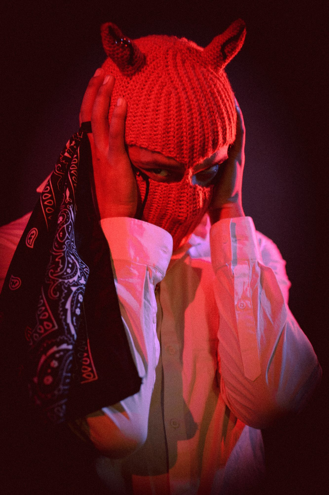
راطراباج
Rattrapage
Six titres, six phases de combustion d'une allumette. Au dernier, l'homme est devenu l'allumette.
Projet de Master 1. Chaque morceau est une étape du feu, de l'étincelle de Départ jusqu'à Clear, la métamorphose complète : la cagoule à cornes marquée de larmes devient le visage du personnage. J'ai porté l'EP de l'écriture à la sortie : textes et toplines, prise de voix, mixage intégral sous FL Studio, direction des shootings et du clip, campagne de lancement et distribution via DistroKid.
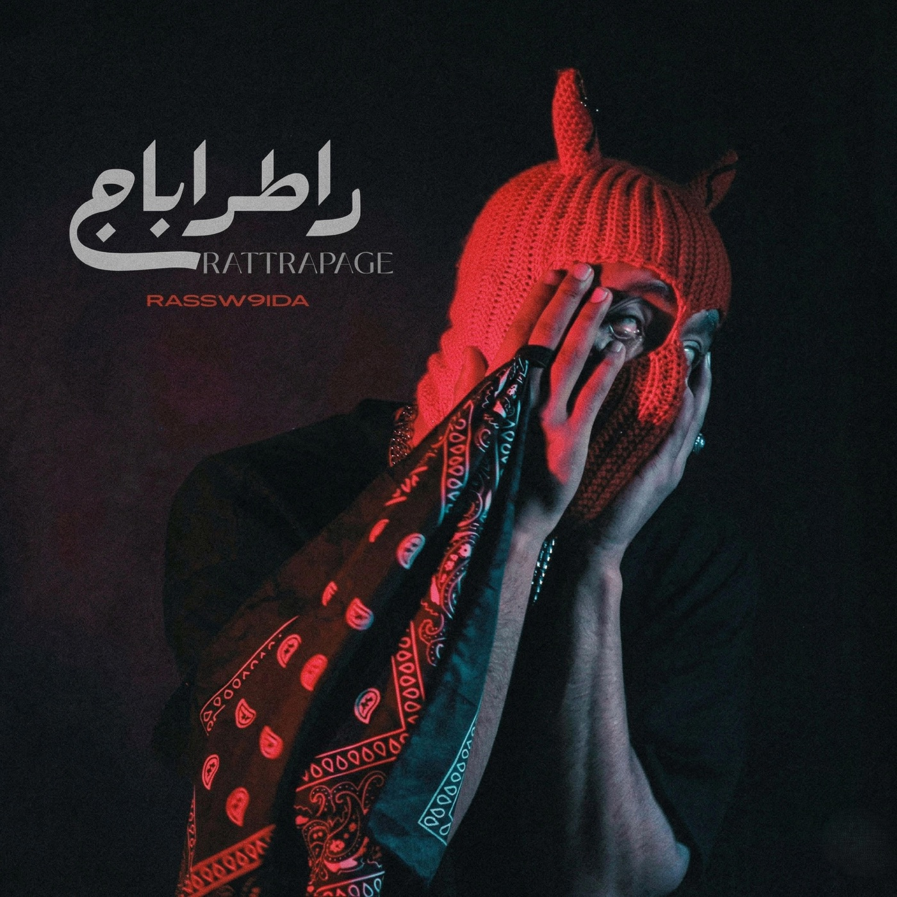
- Production
- @prodby6raw
- Image
- @houidatamer, @moncefkiddi, @makhtarlo6
On n'écrit pas avec de l'encre, on écrit avec ce qu'il reste de nos incendies.Annonce de l'EP, avril 2026
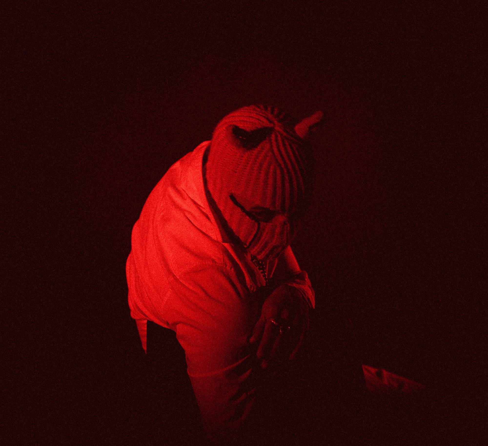
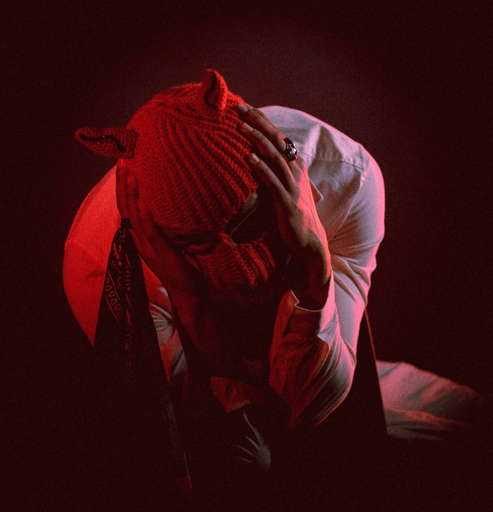
Maison funéraire
Saint-Étienne, la ville noire. Le charbon l'a construite, la suie est restée.
Un film court qui regarde la ville comme on veille un corps : ses façades, ses silences, ce que la mine a laissé derrière elle. Le noir et blanc n'est pas un filtre, c'est le sujet.
- Rôle
- Réalisation, image, montage, son
- Lieu
- Saint-Étienne
Si le lecteur ne s'affiche pas, voir le film sur Google Drive.
Allumette
Des allumettes de lumière projetées dans les fenêtres, qui s'allument et se consument avec le son de l'EP.
Programmée dans TouchDesigner, la pièce transforme Rattrapage en matière : le son figure la combustion de l'EP, la lumière glisse jusqu'au sol de la salle et vient chercher le public dans le noir.
Outil
TouchDesigner, projection vidéo
Son
Combustion de l'EP Rattrapage
Espace
Salle plongée dans le noir, projection sur les fenêtres
Captation
Vidéo verticale, 38 secondes
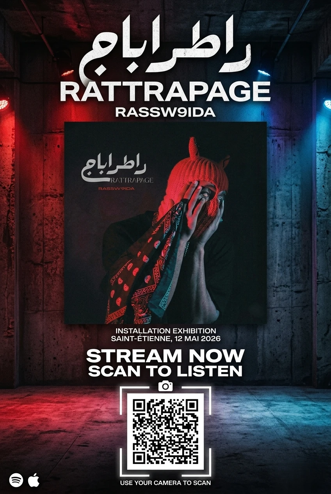
L'EP devenu espace
Dakira veut dire mémoire. Pour l'exposition, j'ai fait de Rattrapage une pièce où l'on entre.
Un petit espace saturé de lumière UV et rouge, traversé de fils. Chaque objet est une trace de l'EP : le visiteur passe du clip à la photo, de l'affiche à la cagoule elle-même, suspendue comme une pièce à conviction.
- Écran vertical, extraits du clip
- Tirage encadré, éclairé en rose
- Cagoule suspendue à une pince
- Tracklist en gothique
- Feuilles suspendues sur fils
- Lumière UV, rouge et magenta
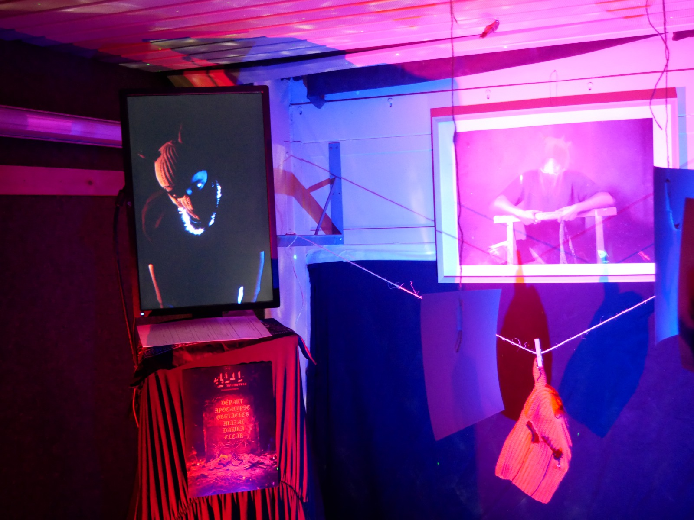
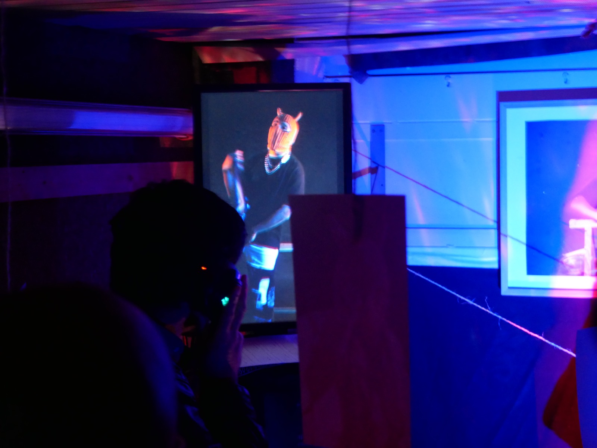
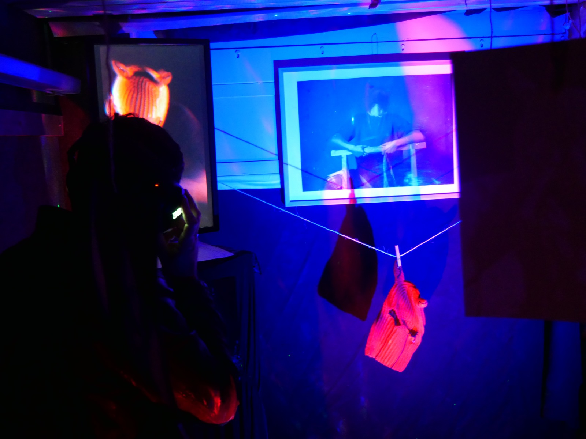
Un barbier, un personnage
Contenu Reels et TikTok pour des commerces de Saint-Étienne, ici un salon de barbier, de la stratégie à la publication.
Les mêmes codes que mon travail d'artiste, mis au service d'un commerce : cagoule, contre-jours, rouge et noir pour la gamme de produits maison. Le barbier devient un personnage, le salon un plateau.
- Stratégie éditoriale et offre de services
- Moodboards et scripts
- Direction de l'équipe sur le tournage
- Montage, étalonnage, son
- Calendrier de publication et suivi des KPI
Soufre / The Floor is Lava
Après la métamorphose, l'allumette doit vivre parmi les autres. Ce deuxième chapitre suit le personnage dans un monde social hostile.
Le nouvel EP parle d'usure, de méfiance envers ceux qui veulent du mal, et de rester debout sans suivre la masse, jusqu'au titre de clôture The Floor is Lava. Sur l'affiche, le masque tombe : le marc de café au fond d'une tasse dessine mon vrai visage, le crâne envahi de corps, la bouche qui rejette le liquide noir. Dans l'installation, je garde la cagoule et j'affronte le public en allumette.
- Format
- Installation, impression 3D, mapping vidéo
- Son
- Gravity, extrait du nouvel EP
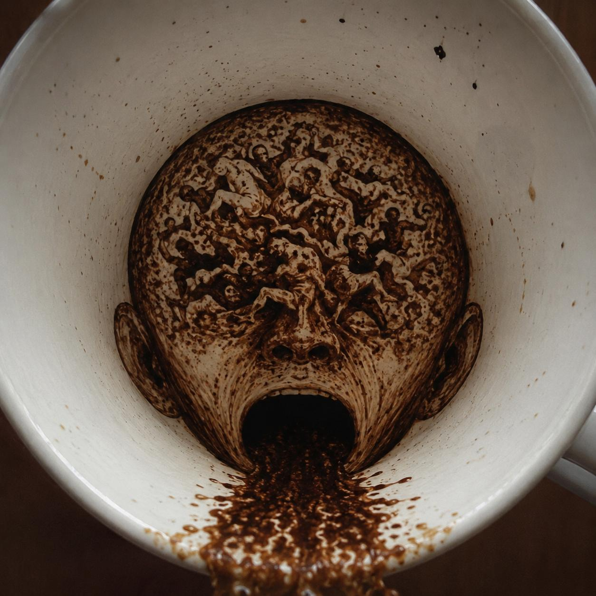
Avant le switchRythme calme et optimiste
- Récit : apparence sociale lisse, intentions cachées.
- Écran central : le personnage cagoulé dans un décor lumineux et fleuri.
- Cadres mappés : des visages souriants, en contradiction avec les sculptures.
Après le switchRythme tendu et percutant
- Récit : reprise de contrôle, la vraie nature des gens apparaît.
- Écran central : le décor bascule dans un espace sombre et brut, le personnage seul.
- Cadres mappés : les sourires disparaissent, place aux grimaces réelles des têtes 3D.
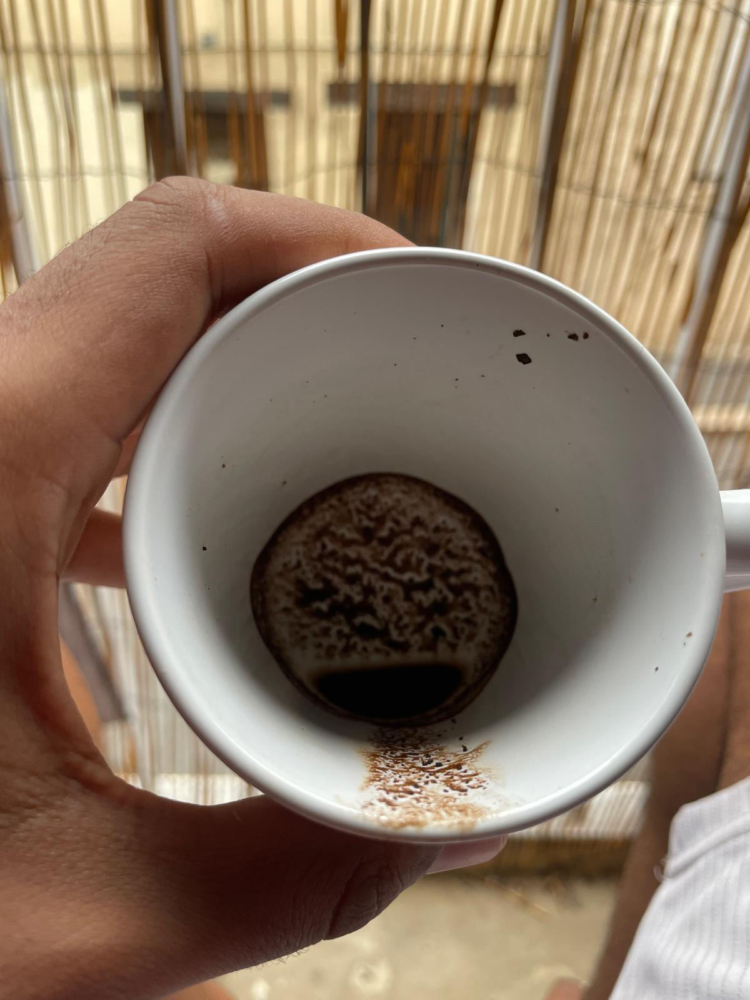
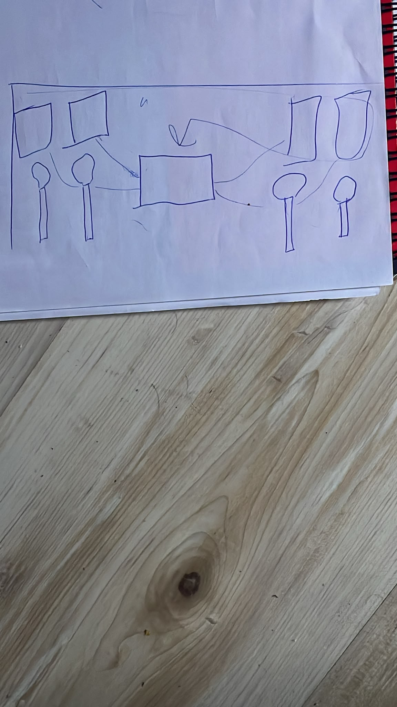
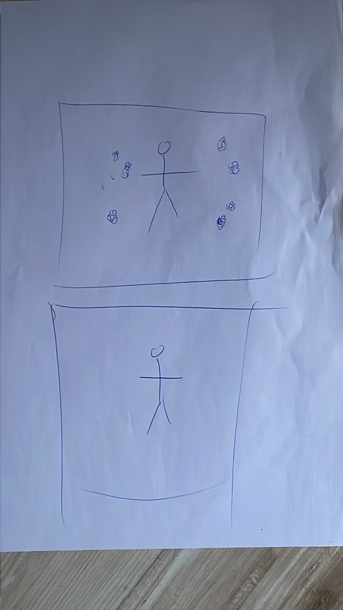
Mon rôle
Direction artistique, écriture en arabe, français et anglais, composition et mixage de l'EP, interprétation sur l'écran central, conception des sculptures-allumettes et création de l'affiche.
En binôme avec Tamer Houida
Direction technique, scan et modélisation des visages pour l'impression 3D, environnements de l'écran central, animation et mapping synchronisé dans TouchDesigner et MadMapper.
On se parle ?
kaborihamza@gmail.comDisponible tout de suite pour un stage à temps plein de 3 à 6 mois, partout en France.